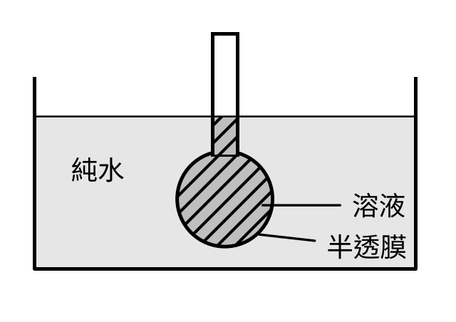
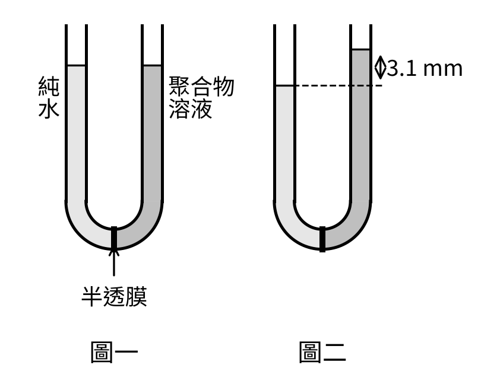
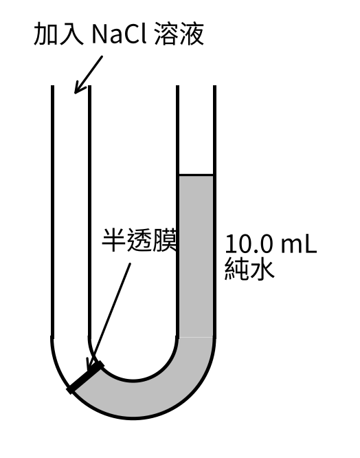
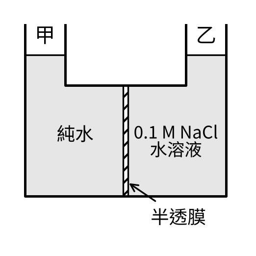

基礎題
某非揮發性、非電解質的溶質具有很大的分子量，其分子量最適宜用何法測定？
- (A) ΔT＝K‧Cm
- (B) PV＝nRT
- (C) ΔP＝x溶質‧P溶劑0
- (D) 滲透壓
看答案與詳解
答案：(D)
下列有關滲透作用的敘述，何者錯誤？
- (A) 滲透作用是由半透膜兩側溶液的濃度不同所引起
- (B) 半透膜僅能通過水分子
- (C) 半透膜對滲透的物質具有選擇性
- (D) 不可用高濃度的注射液做靜脈注射
看答案與詳解
答案：(B)
(D) ✔ 高張注射液會使紅血球失水皺縮。
關於溶液的滲透壓，下列敘述何者正確？
- (A) 10% C6H12O6(aq) 的滲透壓小於 1% C6H12O6(aq)
- (B) 生物體細胞膜對於溶質的滲透有選擇性
- (C) 生物體細胞膜只允許小的離子滲透而不允許較大的分子滲透
- (D) 0.5 M NaCl(aq) 與 0.5 M 尿素水溶液的滲透壓相等
看答案與詳解
答案：(B)
(B) ✔
(C) ✘ 選擇性與粒子大小不一定有關，例如腸壁不易吸收 Mg2+（瀉鹽 MgSO4 的原理），卻能吸收較大的葡萄糖分子。
(D) ✘ NaCl 的 i＝2，滲透壓約為尿素的 2 倍。
有關滲透壓的敘述，下列哪些正確？（多選）
- (A) 滲透作用具有選擇性，而與溶質粒子大小不一定有關係
- (B) 將紅血球放在滲透壓較大的溶液中，水將大量進入血球中
- (C) 將含有相同溶質的水溶液以半透膜隔開，水分子將會從滲透壓高的一邊進入滲透壓低的一邊
- (D) 濃度愈高的食鹽水，其滲透壓愈大
- (E) πV＝nRT 對任何溶液均能成立
看答案與詳解
答案：(A)(D)
(B) ✘ 外液滲透壓大（高張），水由血球流出，血球皺縮。
(C) ✘ 水由稀（滲透壓低）的一邊進入濃（滲透壓高）的一邊。
(D) ✔ π＝iCRT
(E) ✘ 只適用於稀薄溶液，且電解質要乘 i。
U 形管中央有一半透膜，兩側分別裝入糖水與純水，並使兩側液面同高，進行滲透壓實驗。下列敘述哪些正確？（多選）
- (A) 糖水中的糖分子通過半透膜到純水中
- (B) 糖水通過半透膜到純水中
- (C) 純水通過半透膜到糖水中
- (D) 平衡時半透膜兩側的糖水濃度相等
- (E) 平衡時糖水液面比純水高
看答案與詳解
答案：(C)(E)
(C) ✔ 淨流向：水由純水側進入糖水側。
(D) ✘ 純水側始終沒有糖。
(E) ✔ 糖水側液面升高，液柱高差產生的壓力等於滲透壓時達平衡。
滲透壓公式 πV＝nRT 與理想氣體方程式 PV＝nRT 形式相似。設 A 為非電解質。
(1) 把 1 莫耳固體 A 蒸發成 0℃ 的 22.4 升氣體，其壓力為若干 atm？
(2) 把 1 莫耳固體 A 溶解成 0℃ 的 22.4 升水溶液，其滲透壓為若干 N／m2？
看答案與詳解
答案：(1) 1 atm (2) 1.01×105 N／m2
(2) π＝nRT／V，同樣得 1.0 atm＝1.01×105 N／m2（Pa）
將 3.6 克葡萄糖溶於水配成 500 mL 水溶液，此溶液在 25℃ 時的滲透壓約為若干 atm？（葡萄糖＝180）
- (A) 3.6
- (B) 1.8
- (C) 0.98
- (D) 0.18
看答案與詳解
答案：(C)
π＝CRT＝0.040×0.082×298＝0.98 atm → (C)
若海水的濃度相當於 0.32 M 的葡萄糖水，欲藉逆滲透作用淡化海水，至少需施加多大的壓力（atm）？設海水溫度為 27℃。
- (A) 6.8
- (B) 7.4
- (C) 7.9
- (D) 8.8
看答案與詳解
答案：(C)
π＝0.32×0.082×300＝7.9 atm → (C)
將 6.84 克蔗糖溶於水配成 100 毫升水溶液，在 37℃ 將人的紅血球浸在此蔗糖水溶液中。（人的血液滲透壓為 7.5 atm；蔗糖分子量＝342）
(1) 此蔗糖水溶液在 37℃ 的滲透壓為若干 atm？
(2) 紅血球將會發生什麼現象？
看答案與詳解
答案：(1) 5.1 atm (2) 脹大（甚至破裂）
(2) 5.1 atm＜7.5 atm，為低張溶液，水進入紅血球 → 脹大，甚至破裂。
一般醃肉或做蜜餞時，會加入大量的鹽或糖。
(1) 試以滲透作用說明其作用。
看答案與詳解
答案：高張環境使細菌脫水而死
澎湖群島若欲實行海水淡化來提供飲水，下列哪些方法在原理上可行？（應選 3 項）（多選）
- (A) 加明礬使海水中的鹽分離子沉澱而淡化
- (B) 利用太陽能將海水蒸餾淡化
- (C) 將海水緩慢降溫凝固，再將冰取出熔化以獲取淡化的飲水
- (D) 將海水通過陽離子交換樹脂（RNa），以除去所含的離子
- (E) 逆滲透法
看答案與詳解
答案：(B)(C)(E)
(B) ✔ 蒸餾：水蒸發後冷凝，鹽類留下。
(C) ✔ 海水緩慢結冰時析出的冰幾乎是純水，鹽類留在液相（凝固點下降的應用）。
(D) ✘ 只是把陽離子換成 Na+，陰離子也沒除去。
(E) ✔ 對海水加壓超過滲透壓，水分子通過半透膜，鹽類被留下。
進階題
量取 2.0 克胰島素溶於水配成 250 毫升溶液，在 30℃ 測得滲透壓為 26.1 mmHg。
(1) 此溶液的體積莫耳濃度為何？
(2) 胰島素的分子量為何？
看答案與詳解
答案：(1) 1.38×10−3 M (2) 約 5.8×103
(2) n＝1.38×10−3×0.250＝3.46×10−4 mol → M＝2.0／3.46×10−4≒5.8×103
澱粉 (C6H10O5)n，式中 n 平均為 2.00×102。將 0.798 克澱粉溶於水配成 100.0 mL 溶液。（C6H10O5＝162；汞的密度 13.6 g／cm3，溶液密度視為 1.0 g／cm3）
(1) 此澱粉溶液在 25℃ 時的滲透壓為若干 mmHg？
(2) 此滲透壓相當於多高的水柱（cm）？
看答案與詳解
答案：(1) 4.57 mmHg (2) 6.22 cm
π＝2.46×10−4×0.082×298＝6.02×10−3 atm＝4.57 mmHg
(2) 液柱高與密度成反比：h＝4.57 mm×13.6／1.0＝62.2 mm＝6.22 cm
將 2.20 克聚乙烯溶於苯，配成 100 mL 溶液，在 25℃ 測得此溶液的滲透壓為 1.10×10−2 atm。
(1) 求此聚乙烯的平均分子量。
看答案與詳解
答案：4.9×104
M＝2.20／4.50×10−5≒4.9×104
澱粉為葡萄糖形成的聚合物，化學式以 (C6H10O5)n 表示。取 1.0 克澱粉溶於水形成 100.0 mL 水溶液，測得 27℃ 時的滲透壓為 1.44 mmHg，則 n 值約為若干？（C6H10O5＝162）
- (A) 600
- (B) 700
- (C) 800
- (D) 900
看答案與詳解
答案：(C)
n澱粉＝7.70×10−6 mol → M＝1.0／7.70×10−6＝1.30×105
n＝1.30×105／162≒800 → (C)
容器以半透膜（僅水分子能通過）隔成 A 及 B 兩區域，在 A 及 B 中分別裝入等高度的兩種溶液。下列哪些組合會使 A 區域的液面升高？（多選）
- (A) A 中為 0.6 M C6H12O6（葡萄糖）；B 中為 0.5 M H2NCONH2（尿素）
- (B) A 中為 10% 蔗糖；B 中為 10% 葡萄糖
- (C) A 中為 1.0 M NaCl；B 中為 2.0 M NaCl
- (D) A 中為 10% NaCl；B 中為 10% NaI
看答案與詳解
答案：(A)(D)
(A) ✔ 0.6 M＞0.5 M，A 升高。
(B) ✘ 同為 10%，葡萄糖（180）莫耳數比蔗糖（342）多，B 升高。
(C) ✘ B 濃，B 升高。
(D) ✔ 同為 10%，NaCl（58.5）莫耳數比 NaI（150）多，A 升高。
人血液的滲透壓在 37℃ 時約為 7.5 atm。在同一溫度下與血液滲透壓相同的食鹽水（生理食鹽水），其凝固點約為多少℃？（此食鹽水濃度不大，體積莫耳濃度可視為與重量莫耳濃度相等；水的 Kf＝1.86℃／m）
- (A) −1.13
- (B) −0.55
- (C) −0.41
- (D) −0.28
看答案與詳解
答案：(B)
ΔTf＝Kf×iCm＝1.86×0.295＝0.55℃ → −0.55℃ → (B)
25℃ 時一杯食鹽水的密度為 1.0485 g／mL，滲透壓為 48.87 atm。已知 25℃ 時水的飽和蒸氣壓為 24.00 mmHg，則此食鹽水的蒸氣壓為若干 mmHg？（NaCl＝58.5）
- (A) 22.42
- (B) 23.16
- (C) 21.32
- (D) 20.88
看答案與詳解
答案：(B)
取 1 L 溶液：質量 1048.5 g，NaCl 58.5 g，水 990 g＝55.0 mol；粒子 2.00 mol
P＝24.00×55.0／(55.0＋2.00)＝23.16 mmHg → (B)
27℃ 時血液的平均滲透壓為 7.7 atm，則可推知與血液等張的生理食鹽水濃度約為（NaCl＝58.5；溶液密度視為 1.0 g／mL）
- (A) 0.5%
- (B) 0.9%
- (C) 1.5%
- (D) 1.8%
看答案與詳解
答案：(B)
每升含 NaCl 0.157×58.5＝9.2 g，約 1000 g 溶液 → 約 0.9% → (B)
有關滲透壓的實驗：試料共 15 克，甲、乙二人共用這 15 克來作實驗，結果如下：甲：使用 100 克水，0℃ 時的滲透壓為 12.44 atm；乙：使用 100 克水，27℃ 時的滲透壓為 6.84 atm。則所使用物質的分子量最接近（溶液體積均視為 100 mL）
- (A) 114
- (B) 150
- (C) 180
- (D) 200
看答案與詳解
答案：(C)
甲：12.44×0.100／(0.082×273)＝0.0556 mol
乙：6.84×0.100／(0.082×300)＝0.0278 mol
共 0.0834 mol → M＝15／0.0834≒180 → (C)
在 25℃ 時，某溶液含某種聚合物溶質，其分子量為 4.9×103 g／mol，該溶液的滲透壓為 6.9 atm。
(1) 有多少克此溶質溶在 100 mL 的溶液中？
看答案與詳解
答案：約 1.4×102 g
質量＝0.0282×4.9×103≒1.4×102 g（約 138 g）
已知 37℃ 時血液的滲透壓為 7.50 atm。若欲配製與血液等張的葡萄糖（C6H12O6）水溶液做靜脈注射用：
(1) 在 100 mL 溶液中須用葡萄糖若干克？
看答案與詳解
答案：5.31 g
100 mL 需 0.0295 mol×180＝5.31 g
三個形狀相同的容器以半透膜部分相通（水分子能通過，溶質則否）。在容器 a 內加入 2.0 L 0.10 M NaCl 水溶液，容器 b 內加入 1.0 L 0.20 M BaCl2 水溶液，容器 c 內加入 1.1 L 0.30 M 葡萄糖水溶液。達到平衡時，各容器內的液面由高至低的順序為何？（電解質均假設完全解離，液柱壓力差忽略）
- (A) b＞a＞c
- (B) c＞b＞a
- (C) a＞b＞c
- (D) a＞c＞b
看答案與詳解
答案：(A)
平衡時三容器粒子濃度相等＝(0.40＋0.60＋0.33)／4.1＝0.324 M
體積：a＝1.23 L，b＝1.85 L，c＝1.02 L；形狀相同 → 液面 b＞a＞c → (A)
已知人體血液的平均滲透壓為 7.7 atm，體溫為 37℃。下列哪些為正確敘述？（多選）
- (A) 為病患靜脈注射葡萄糖水溶液時，葡萄糖濃度最好約為 0.20 M
- (B) 將人體的紅血球放入 0.20 M C6H12O6(aq) 時，紅血球會皺縮
- (C) 將人體的紅血球放入 0.20 M NaCl(aq) 時，紅血球會膨脹
- (D) 剛吃飽時，血液的平均滲透壓會略大於 7.7 atm
- (E) 若靜脈點滴水溶液中只含有等莫耳數的葡萄糖及食鹽，食鹽濃度最好約為 0.1 M
看答案與詳解
答案：(D)(E)
(A) ✘ 等張葡萄糖約 0.30 M。
(B) ✘ 0.20 M＜0.30 M 為低張，紅血球膨脹。
(C) ✘ 0.20×2＝0.40 M＞0.30 M 為高張，紅血球皺縮。
(D) ✔ 飯後血中溶質增加，滲透壓略升。
(E) ✔ x＋2x＝0.30 → x＝0.10 M
大考／素養題
25℃ 時，將 200 mg 細胞色素丙溶於水，最後容積為 10 mL（細胞色素丙的分子量為 12400）。將此溶液置入下圖所示的薊頭漏斗內，底部封有一層膜，可讓水分子通過而不讓細胞色素丙通過。

(1) 此溶液的滲透壓為若干 atm？
(2) 滲透平衡後，上端管中溶液約上升多少 cm？（溶液密度視為 1.0 g／mL，1 atm＝76 cmHg，汞的密度 13.6 g／mL，稀釋效應忽略）
看答案與詳解
答案：(1) 0.039 atm (2) 約 40.7 cm
(2) 0.0394 atm＝0.0394×76≒2.99 cmHg → 水柱＝2.99×13.6≒40.7 cm
27℃ 時，一中間隔有半透膜的 U 形管，左側裝有純水，右側裝有 1 g 某聚合物溶於 500 mL 水形成的溶液，剛開始時兩側液面高度相同（如圖一），經一段時間達平衡後，兩側液面高度差為 3.1 mm（如圖二）。假設溶液密度為 1 g／mL，則該聚合物的分子量約為多少？（汞的密度 13.6 g／mL）

- (A) 1.64×103
- (B) 1.64×104
- (C) 1.64×105
- (D) 1.64×106
- (E) 1.64×107
看答案與詳解
答案：(C)
π＝CRT：3.0×10−4＝(1／M)／0.500×0.082×300
M＝(2×0.082×300)／3.0×10−4≒1.64×105 → (C)（液面變化造成的稀釋極小，忽略）
一截面積為 1.00 cm2 的 U 形管，以半透膜隔開兩側，如附圖。27℃ 時在 U 形管一邊注入 10.0 mL 純水，另一邊應注入多少 mL 的 1.00×10−4 M NaCl 水溶液，才能使純水的液面保持原來的高度？（鹽水及純水密度皆為 1.00 g／mL，半透膜只許水分子進出，1 atm 等於 1.00×103 cm 水柱高）

- (A) 10.0
- (B) 12.5
- (C) 14.9
- (D) 17.4
看答案與詳解
答案：(C)
純水液面不變（10.0 cm），鹽水液面須高出 4.92 cm → 14.9 cm → 體積 14.9 mL → (C)
將純水及 0.1 M NaCl 水溶液分別裝入右圖容器甲、乙兩邊，中間以半透膜（只有水分子可以通過）隔開。下列敘述哪些正確？（多選）

- (A) 達成平衡時，甲邊水面較高
- (B) 甲、乙兩邊水面的高度差與溫度有關
- (C) 加入少量純水於乙邊時，兩邊水面的高度差會減少
- (D) 加入少量純水於甲邊時，兩邊水面的高度差會增大
- (E) 慢慢加入葡萄糖於甲邊的純水中，直到其濃度達 0.1 M 時，兩邊水面就會恢復等高
看答案與詳解
答案：(B)(C)
(B) ✔ π＝iCRT 與 T 有關。
(C) ✔ 乙被稀釋，滲透壓變小，高度差減少。
(D) ✘ 甲邊的水最後仍會進入乙而稀釋乙，高度差不會增大。
(E) ✘ 0.1 M NaCl 粒子濃度 0.2 M＞0.1 M 葡萄糖，仍不等高。
在 25℃，某非離子型樹脂在水中的溶解度為 0.1%（重量百分率濃度）。已知水的 Kb 為 0.512℃／m，Kf 為 1.86℃／m。表 3 所列為該樹脂飽和水溶液所測得的物理性質。試問該樹脂的平均分子量（克／莫耳），最接近下列哪一數值？〔表 3〕沸點：100.0℃；凝固點：0.0℃；滲透壓（298K）：7.6 mmHg（理想氣體常數 R＝0.08205 L‧atm／(K‧mol)）
- (A) 1500
- (B) 2500
- (C) 3500
- (D) 4500
- (E) 5500
看答案與詳解
答案：(B)
沸點、凝固點變化太小，量不出來（表中都沒變），只能用滲透壓：
π＝7.6／760＝0.010 atm → C＝0.010／(0.08205×298)＝4.09×10−4 M
M＝1／4.09×10−4≒2.4×103 → 最接近 2500 → (B)
硬水中含有鈣、鎂等金屬離子，因生活上或工業上的需要，有時必須先將硬水以不同方法處理。若將 1 公升的硬水分成四等份，分別用下列方法處理：(甲) 陽離子交換法，將水中的陽離子交換成鈉離子；(乙) 蒸餾法；(丙) 陰陽離子交換法，將水中的陽離子交換成氫離子，陰離子交換成氫氧根離子；(丁) 逆滲透法。經處理後的水，其導電度大幅下降的有哪幾種？
- (A) 甲乙
- (B) 甲丙
- (C) 甲乙丙
- (D) 甲丙丁
- (E) 乙丙丁
看答案與詳解
答案：(E)
(乙) 蒸餾得純水。
(丙) H+＋OH− → H2O，離子被除去。
(丁) 逆滲透：加壓使水通過半透膜，離子被留下。
乙丙丁 → (E)